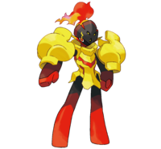

Pokedex
Volver a Inicio
Armarouge

Armarouge (グレンアルマ en japonés) es un Pokémon de tipo fuego/psíquico introducido en la novena generación.
Etimologia
- Su nombre proviene de la palabra española armadura y la palabra francesa rouge (rojo).
- Su nombre en japonés, Gurenarma, proviene de la palabra japonesa 紅蓮 guren (carmesí) y de la palabra española armadura.